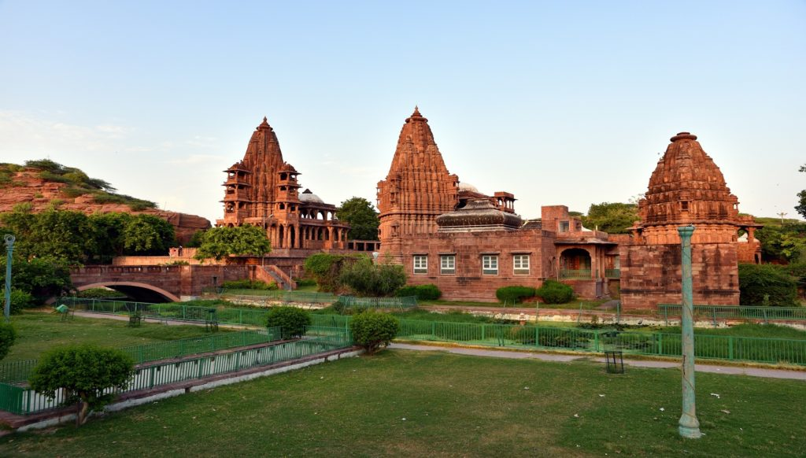

MEHRANGARH FORT AND MUSEUM

KHEJARLA FORT

UMAID BHAWAN PALACE

MANDORE
MANDORE
Discover
the treasured views that show you the beauty of the blue city.
the treasured views that show you the beauty of the blue city.
entertainment, history and culture like never before

FLYING FOX
Fly high over the outer battlements of Rajasthan's most majestic
fortress, glide serenely over two desert lakes and enjoy the best
view of Mehrangarh and the Blue City.

BISHNOI VILLAGE TOUR
The best way to get a glimpse into the rich cultural life of the
state of Marwar.

MARWAR FESTIVAL
The Marwar festival is one the most famous festivals of Jodhpur
and India.

Jaswant Thada
This white marbled architecture is a memorial site of a Rajput
clan. Jaswant Thada is a perfect example of architectural
brilliance.

Balsamand Lake and Garden
The lake is a man-made construct, built in 1159 AD by Balak Rao
Parihar to provide water to the city of Mandore. One kilometre
long, 15 metres deep, and 50 metres wide.

Toorji Ka Jhalra (Toorji’s Step Well)
The Step Well Square is a mini-architectural tour with the
Toorji's Step Well at the center, and almost 250 yrs of building
traddition on view.

Rao Jodha Desert Rock Park
This 72-hectare park and model of ecotourism sits in the lee of
Mehrangarh. Restored and planted with native species to show the
natural diversity of the region.
Clock Tower
The century-old clock tower is a city landmark surrounded by the
vibrant sounds, sights and smells of Sardar Market.


Jodhpur is known for its rich history, colorful culture, and of course, its delectable cuisine. Jodhpur food is a unique blend of spices, flavors, and techniques, making it a must-try for anyone visiting the city.
"Explore the dynamic blend of tradition and modernity in Jodhpur - the Desert Capital of India. From ancient Palaces to Forts , this city has something to offer for everyone!"